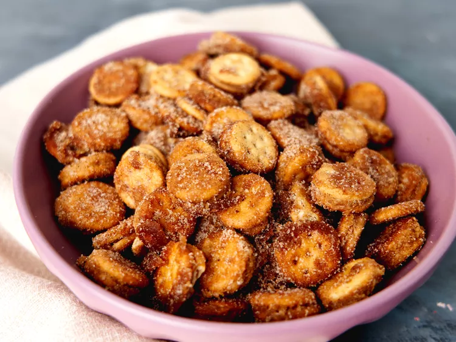

Churro Bites

Description:
Churro bites are a favorite at Taco Bell, but are relatively easy to make at home as well.
All you need are some basic utensils, an oven or preferrably air-fryer, a bit of time and the following list of ingredients!
Ingredients:
- 1/2 angel food cake, cubed
- 1/2 cup granulated sugar
- 2 tablespoons ground cinnamon
- 1/2 cup powdered sugar
- 1/2 cup cream cheese, softened
- 1/4 cup milk
- 2 tablespoons unsalted butter, softened
Steps to make:
- Place cubed angel food bites in air-fryer/oven, spray with oil and cook at 350 for 5 minutes.
- Combine cinnamon and sugar together, pour over bites. Pour bites and sugar into a bag and shake until bites are coated.
- Use mixing bowl to combine cream cheese, milk and butter into dipping sauce and mix until smooth. Add sugar to thicken or milk to thin.
Back to Home Page